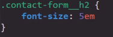
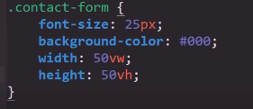

Teoria de las Medidas de Texto
Primero que nada existen dos tipos de meidas para las fuentes en CSS:
Medidas Fijas: Como los centimetros, milimetros, punto, pixeles etc
Medidas Relativas: Son aquellas medidas que dependen de un "algo" como por ejemplo el contenedor del elemento
Medidas Fijas
Las medidas fijas son aquellas expresadas valores fijas y estandarizados que no depende de ningun factor externo, sin importar la sircunstancia siempre se expresaran en la misma dimención, por su pate esta medida puede ser expresada en multiples formatos, los cuales son
PX: pixeles
Cm: Centimetros
mm: Milimetros
Pt: Puntos
Medidas Relativas
Se tratan de aquellas medidas que estan sujetas a las caracteriticas del contendor en el que se encuentran, son empleadas principalmente para los diseños responsive, ya que se ajustan en base a los cambios que ocurran en el contenedor en cuestión.
Constan de barios tipos de medidas diferentes:
-
Em
Por defecto esta unidad medida esta compuesta por 16 pixeles, es posible el definir el de cuantas unidades se desea el tamaño de la fuente de la siguite forma:
En estos casos se le puede dar el valor que se desee, si embargo hay que tener presente que el numero de unidades utlizadas es igual a multiplicar a este valor por el numero de px que posea "em" en ese momento, ya que esto puede ser modificadopor las dimenciones de la caja contenedora.
El valor de "em" es definido por la herencia en base a las dimenciones del contenedor del elemento actual, por ejemplo si definimos un valor de letra de 20px en el coontendedor, en el elemento hijo el valor de cada "em" se ajustara a esos 20px. Por lo tanto el tamaño de letra aplicado en el contendor define el valor de cada unidad "em" utilizado en el elemento hijo
Pero esto no queda así, realmete el valor de "em" es defibnido por el valor de cualquier propiedad que trabaje con unidades de medida, por lo tanto verdaderamente las diemciones, el padding, el margin etc todos estos valores aplicados en el contenedor afectaran el valor de cada unidad "em" del elemento hijo.
-
Rem
Este valor tiene como referencia al tamaño de la fuente definido en el elemento root.
-
viewport:
Se trata de un valor que hace referencia a las dimenciones de la pantalla del dispositivo, en la cual 100v eqivalen al total de la deimención de la panatalla, esta medida se dibide en dos, el "viewport width (vw)" y el "viewport height (vh) " es decir uno aplica para el ancho de la pantalla y el otro para el alto de esta.
En este ejmplo se esta definiendo que las dimenciones del formulario sean iguales a la mitad de las diemciones de la pantalla.